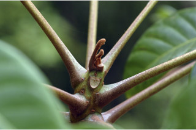
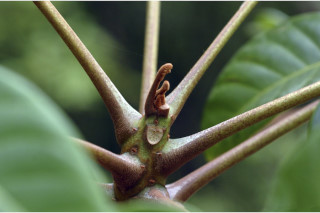
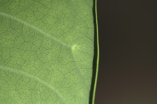
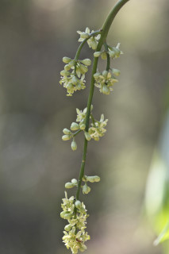
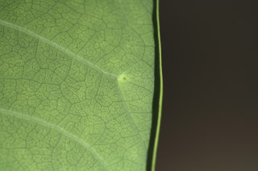
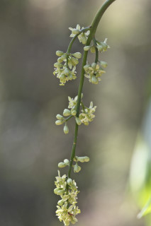

| Leaves : | Leaves compound , imparipinnate , alternate , spiral , crowded towards twig ends, to 1 m long; rachis pulvinate , subterete , glabrous ; petiolule 0.3-0.7 cm long, glabrous ; leaflets 11-21 pairs, alternate or subopposite , increasing size towards apex , 5-14 x 3-5 cm, elliptic-oblong to oblong-lanceolate , apex acute or acuminate , base asymmetric , margin entire and revolute , glaucous , tomentose beneath when young, later glabrous ; midrib raised above; secondary_nerves 8-16 pairs, glands present at the fork near margin; tertiary_nerves broadly reticulate . |


 

 


